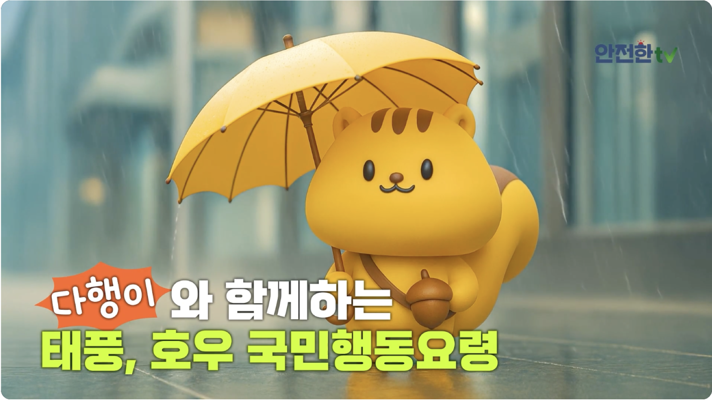
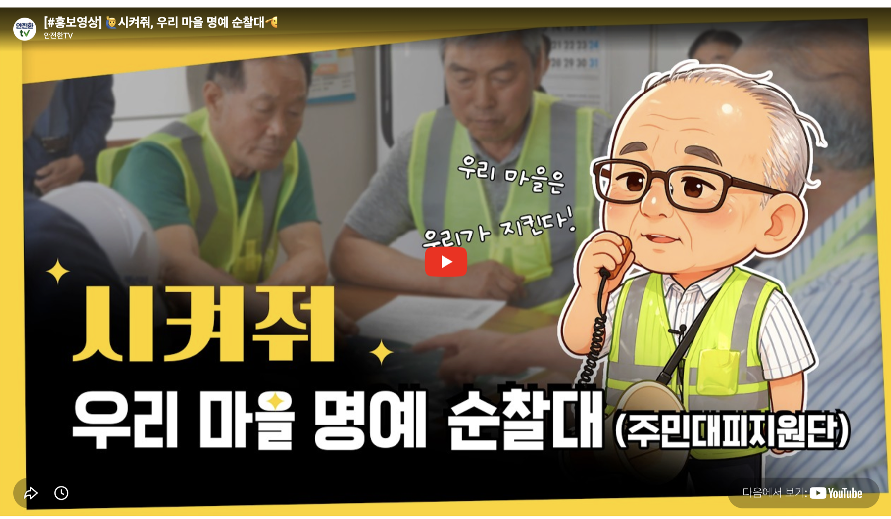

장기호우·복합재난 시대,재난안전산업이 만드는 새로운 안전
장기호우·복합재난 시대,재난안전산업이 만드는 새로운 안전1
DISASTER SAFETYTECHNOLOGY
재난안전기술 및 인증제품 정보를 한눈에 확인해보세요.


 재난안전 실험실
재난안전 실험실
 재난안전 솔루션
재난안전 솔루션
 전문가 대담
전문가 대담


 포커스, 이 기업
포커스, 이 기업
 캐치업
캐치업
 재난안전산업 뉴스를 한눈에
재난안전산업 뉴스를 한눈에